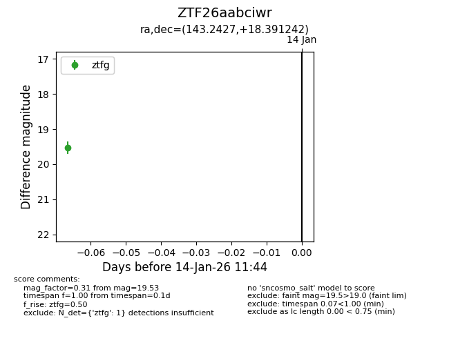
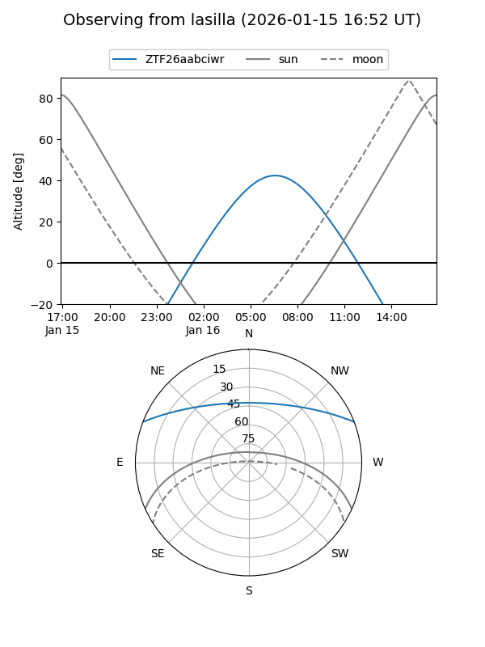
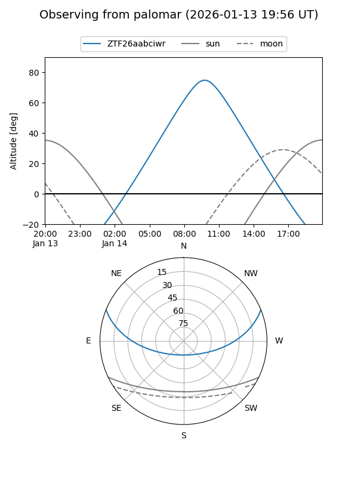

ZTF26aabciwr
Target ZTF26aabciwr at 2026-01-16 11:45
Aliases and brokers:
FINK: link
Lasair: link
ALeRCE: link
alt names
ZTF26aabciwr (ztf,fink_ztf)
Coordinates:
equatorial (ra, dec) = 143.2427,+18.39124
equatorial (HMS+DMS) = 09:32:58.24,+18:23:28.47
galactic (l, b) = (212.8960,+43.71198)
Flags:
Photometry:
last ztfg=19.53
1 ztfg detections
Lightcurve

Visibility


Additional plots